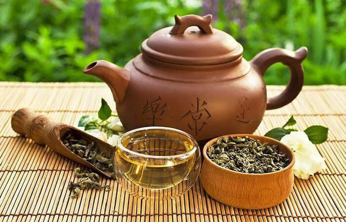

Улун — це один з найбільш різноманітних і цікавих видів китайського чаю, який займає особливе місце в чайній традиції завдяки своєму унікальному процесу обробки та багатому смаковому профілю.
Улун відрізняється від інших видів чаю тим, що його листя проходить часткову ферментацію. Це значить, що він перебуває між зеленою і чорної чаєм за ступенем ферментації. Процес виготовлення улуну включає кілька етапів: підсушування, часткову ферментацію, скручування і смаження. Завдяки цьому улун має особливі характеристики — від легкого і квіткового до глибокого і фруктового смаку, залежно від сорту і способу обробки.
Одним з найбільш відомих сортів улуну є Тігуаньїн, який вирощують в провінції Фуцзянь. Цей чай має виразний аромат квітів і фруктів з нотками меду. Іншим популярним сортом є Да Хун Пао, який вирощують на гірських схилах провінції Уї. Да Хун Пао має глибокий, насичений смак з відтінками печива і карамелі.
Процес виготовлення улуну досить трудомісткий і включає кілька ключових етапів. Листя збирають вручну, потім піддають частковій ферментації, що дозволяє чаю розвиватися без повного окислення. Після цього листя скручують вручну або машинним способом і підсушують, щоб зупинити ферментацію. Завершальний етап — це смаження, яке надає чаю його характерний аромат і смак.
Улун також має певні користі для здоров’я. Він містить антиоксиданти, які можуть сприяти зниженню рівня холестерину, поліпшенню обміну речовин і підтримці здоров’я зубів і кісток. Цей чай може допомогти знизити рівень стресу і поліпшити концентрацію завдяки наявності невеликої кількості кофеїну.
Заварювання улуну може бути дуже захопливим процесом. Зазвичай його заварюють у чайнику з листя, використовуючи кілька розігрітих порцій води. Це дозволяє розкрити всі нюанси смаку і аромату, які можуть змінюватися з кожним наступним заварюванням. Традиційно улун подають у маленьких чашках, що дозволяє насолоджуватися його ароматом і смаком повною мірою.
Улун — це чудовий вибір для тих, хто хоче зануритися в світ китайських чаїв і насолодитися їх багатством і різноманіттям.